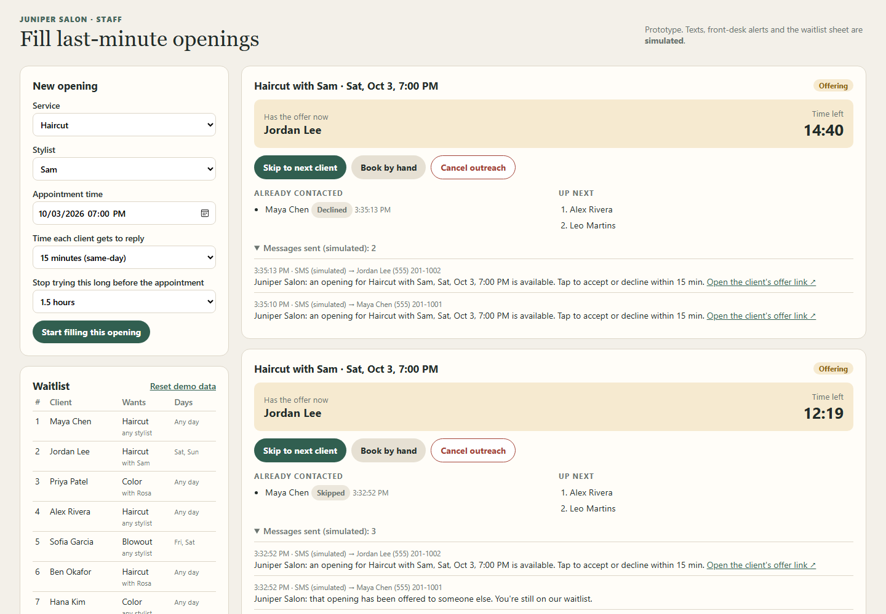
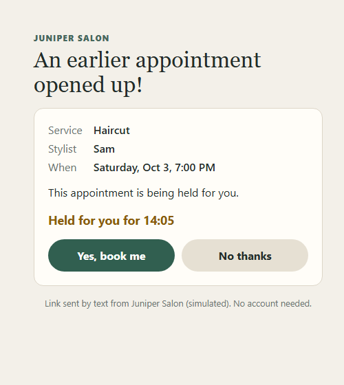

Juniper Salon · Prototype review
“Keep the process moving reliably, without double-booking.”
What matters most, in your words
Your goal: at least half of last-minute cancellations refilled, without you and Carla constantly watching each one.
How the prototype works
Service, stylist and time. That's all Carla needs to enter.
Same service, stylist preference and day, just like today. Whoever joined the waitlist earliest goes first.
A link to accept or decline from their phone. No account. 15 minutes to answer for same-day openings.
The opening locks immediately so no one else can claim it. The client and front desk get a confirmation, and you add it to Square.
They get a polite note and stay on the waitlist. The offer moves straight to the next person on the list.
What you, Carla and your clients see


The client sees the appointment, a countdown, and two buttons. No other names and no waitlist position.
A late “yes” sees: “This offer has expired or the appointment is no longer available.”
Why you can trust it
Only the client currently holding the offer, within their time, can accept. A second or late “yes” is turned away automatically, so last month's Saturday mix-up can't happen.
The 15-minute countdown runs behind the scenes, not on anyone's screen. It moves to the next client even if no one is watching, and picks up where it left off if a computer restarts.
The booked client and front desk get a confirmation. Anyone who timed out or was skipped is told, and stays on the waitlist.
Skip, book by hand or cancel at any point. There's always a clear record of who was contacted and what happened.
Where the prototype stands